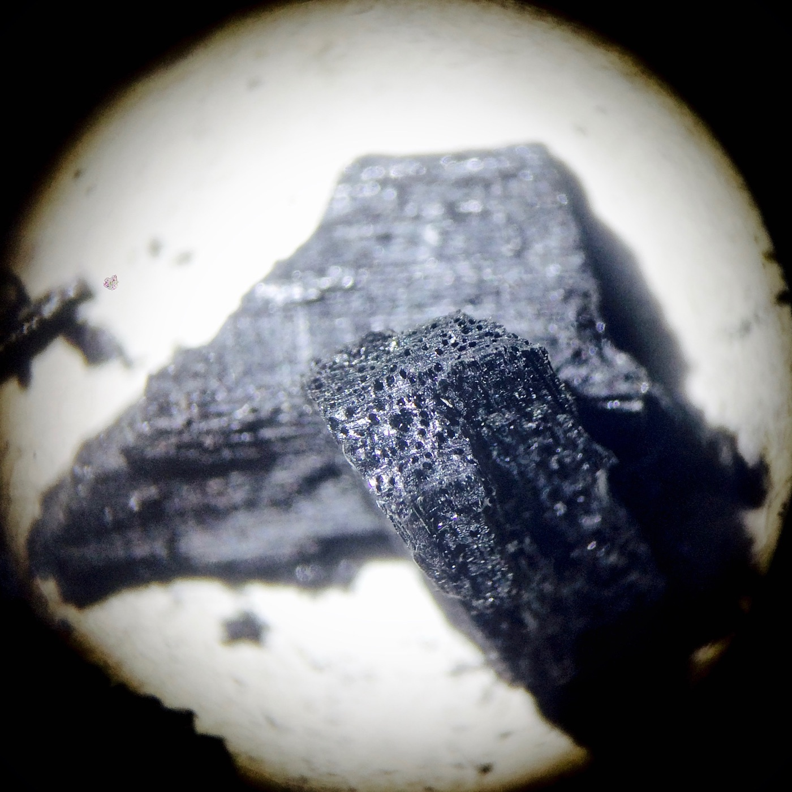
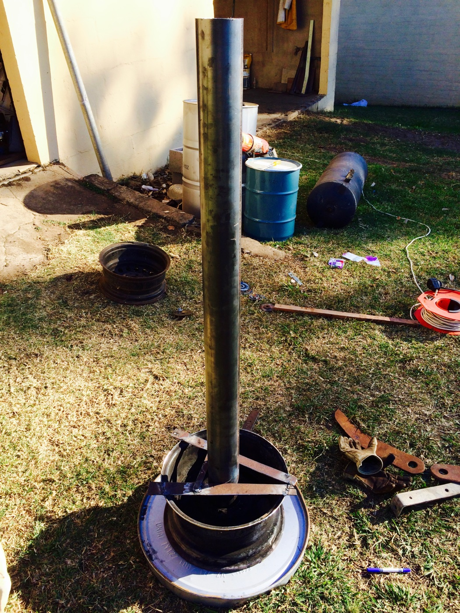
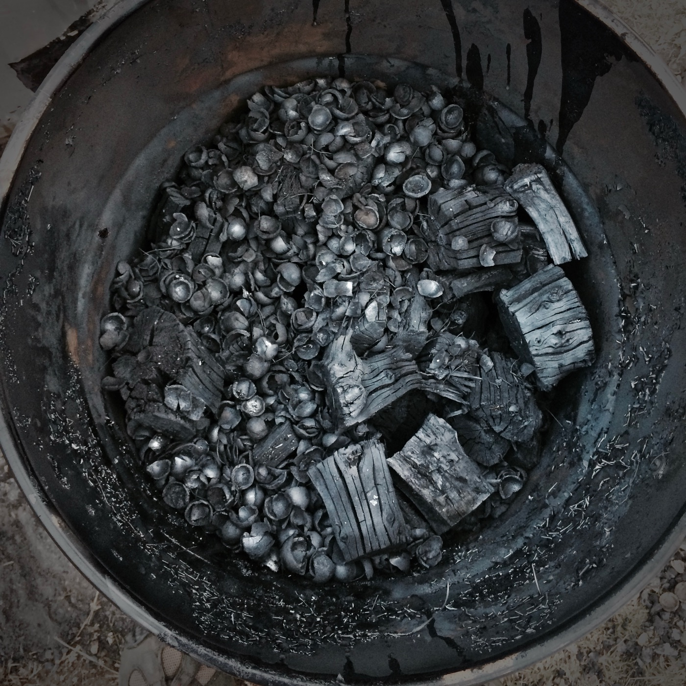
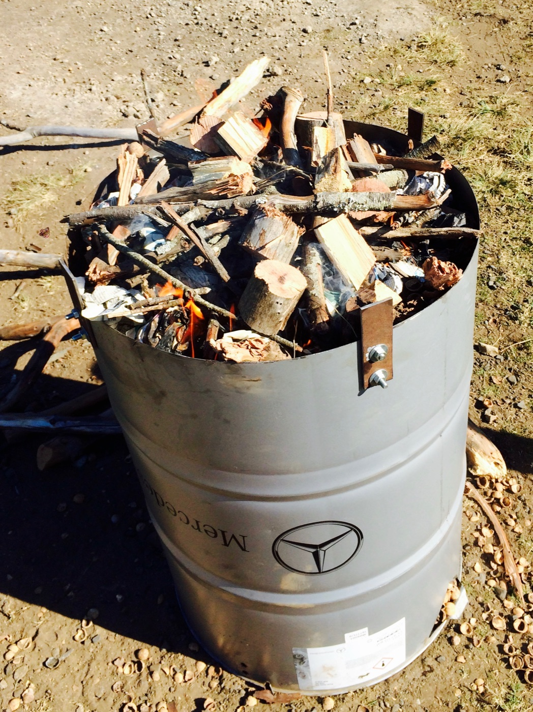

2017-09-28
Backyard biochar
What is biochar?

Figure 1: Biochar at 16 x magnification
Biochar is simply a form of carbon produced through incomplete combustion of carbon-based feedstock. The idea is to produce carbon in various forms of purity through a process called pyrolysis. Activated carbon may be considered one of the more pure versions compared to biochar and charcoal is likely a less pure version of biochar. Charcoal is produced in rather large quantities with the specific intention of combustion. For this, the quality control need only ensure that sufficient carbon remains in the product beyond the carbonization process that will provide adequate combustion. Activated carbon is subjected to far greater quality control due to its use as a charged form of carbon. Activated carbon is used in filtration and scientific environments and the consistency of a product is important. Biochar is likely somewhere between activated carbon and charcoal in its quality. It is used for soil amendments and there are various characteristics of the biochar that can be manipulated for optimal amendment.
The basic process of producing biochar is to induce combustion of carbon-based feedstock at temperatures ranging from between 400 °C to 900 °C under low oxygen environments. Under these conditions the impurities found within the feedstock are released as wood gases whilst the carbon remains intact. The process has been called carbonization and results in a product of 70 - 90 % carbon if the correct procedures are followed. During the process the wood gases are burnt to further provide heat required to ‘purify’ the feedstock. The end result is a brittle black media which takes on the sound of clanging glass and tastes like nothing.
Characteristics of Biochar
I will only briefly list some of the specific characteristics that have brought my attention to biochar but you can go further by having a look at the presentation by Living Web Farms here.
Improved water holding characteristics
Biochar is able to make water logged clay soils less water logged and it can also increase water holding abilities of sandy soils. This is due to its unique structure and lifespan. It is highly porous and can absorb water which remain available in the sandy soil to the soil food web, including the roots of terrestrial plants. It also has a stable half life of over 1000 years and when it is mixed with clay soils it can improve water movement within the substrate mixture.
Increased available surface area for microbial life
The soil is supposed to be a thriving ecosystem of diverse life that we have neglected for far to long. It was only quite recently that the scientific world started to uncover the hidden diversity living within the soil. Until 2011 the technological ability to process large amounts of genetic information were highly limited and since then the amount of data generated has created a massive data sink that is challenging our abilities to understand. We have come to realise that soil health is to some degree more important than fertility and that the soil food web is highly sensitive to change. The use of biochar as part of a healthy management plan can greatly increase the total available surface area for the soil food web.
Improved nutrient cycling
Biochar is a charged form of carbon and can bind some nutrients within the soil. The resulting bound nutrients are in an accessible form for when they are needed. It is able to reduce nutrient loss through leaching and increase the soils cation exchange capacity over time. This has beneficial effects on nutrient cycling within the soil food web but it is important to understand the biochar itself is not a fertilizer.
Carbon sequestration
The long half life of biochar coupled with its resistance to degradation in the soil food web create a long term carbon sink. The carbon captured by the feedstock in their photosynthetic growth will, under normal conditions, undergo decomposition after they have died and a by-product of decomposition is carbon dioxide (CO2). When the feedstock is put through pyrolysis there is some CO2 released but the majority of the carbon is locked up. The addition of biochar into the soil is a way of more ‘permanently’ fixing carbon and the properties of biochar can improve carbon holding capacities of the soil further enhancing its sequestration abilities.
Making backyard biochar
Biochar can be made using readily available parts that can be sourced nearly entirely from scrap yards. The simplest way, that I have found, to make biochar is using the double barrel retort ‘Top Lit Up Draft’ (TLUD) approach which is nicely described in this video series made by Living Web Farms. The basic unit consists of the a chimney flue (Figure 2), a retort chamber in which the biochar is made (Figure 3), and the outer shell in which the combustion material is packed (Figure 4).
The chimney flue
The chimney flue was made out of a 1.5 m piece of 100 m diameter steel pipe. The pipe was too heavy to brace onto the 210 L drum so an old wheel rim was picked up from the scrap yard and basic brace welded in place to hold the pipe upright. This is not the only way but rather a design based on the tools available. 1.5 m seems to be an efficient length to create a substantial pull through the system.

Figure 2: A 1.5 m section of 100 mm steel pipe was inserted into an old wheel rim to provide stability
The retort
The retort drum was harder to find in my situation. There are so many designs online and the retort drum can be fabricated using scrap parts but ultimately a pragmatic solution is something that will be easy to use and easy to find. The only clamp top drum that could be found were 75 L drums that used to contain hair dye but the clamp top makes the process so much simpler that trying to fabricate your own version. The end product will be biochar and if done correctly there will be little variation in its carbon purity between complicated iterations of the basic design.
“Everything should be made as simple as possible, but not simpler - Albert Einstein”

Figure 3: The retort was loaded with pieces of wood and filled with macadamia nut shells. The drum was packed full and after the burn it had reduced to roughly two thirds in volume.
The combustion chamber
A standard 210 L steel drum is the most convenient way to quickly and cheaply get a working prototype. The drum can be easily modified to allow more air as required and they are relatively cheap to acquire from a scrap dealer. I started with a new drum which I organised from a Mercedes garage and fabricated some metal brackets that held the lid in place creating an air intake just below the chimney. I also included some cut outs at the base of the drum which can be peeled back to allow more or less air intake from the base.

Figure 4: A 210 L steel drum with the top cut off and flanges fabricated to hold the lid just elevated. The drum had air holes drilled along the bottom to allow for air flow through the burn. Wood was packed as tightly as possible around the inner retort drum and lit on the top.
Optimization
The feedstock available will require that you tailor your systems performance as you use it but the basic unit is a good place to start. In the optimization of the unit you would need to consider air flow/introduction and the feedstock packing. The efficient combustion of the wood gas requires the correct mixture of air from the holes at the base and the air draft prior to entering the flue. The basic retort does not allow for substantial modifications during a burn and this will result in the process undergoing various phases of efficiency. The best way to optimize the process it to try and standardize your feedstock used in the retort and the way in which air is introduced. Once you have managed to perform a few test burns you should add more air holes as necessary (it is easier to add holes than to cover them) and find the best packing method for your own production style. Standardize your production and improve the reproducibility of high quality biochar. If you decide to produce your own biochar, my advice is to always try make it the best you can.
Farm scale biochar and the logistics
Backyard biochar is relatively easy to make but the process described above is hard to implement on a farm scale. The most costly part of the process is the movement of raw feedstock and should be carefully considered when planning at scale. In the double barrel system there is a fair amount of feedstock required to pack the combustion chamber which is burnt to near complete combustion in the process required for pyrolysis in the retort. It is likely that the ratio of feedstock to biochar is around 5:1 - 10:1 depending on feedstock. On a farm of 5 hectares using an application rate for biochar of 1 ton per hectare, the raw feedstock required would be around 25 - 50 tons. If this feedstock needs to be moved over large distances the economics of the production are lost and the number of barrel burns would be 500 - 1000 burns.
For a more scientific explanation of biochar you can read further by looking up either Lee et al. (2010) or Hernandez-Soriano et al. (2016).
References
Hernandez-Soriano, Maria C, Bart Kerré, Peter M Kopittke, Benjamin Horemans, and Erik Smolders. 2016. “Biochar affects carbon composition and stability in soil: a combined spectroscopy-microscopy study.” Scientific Reports.
Lee, James Weifu, Bob Hawkins, Danny M Day, and Donald C Reicosky. 2010. “Sustainability: the capacity of smokeless biomass pyrolysis for energy production, global carbon capture and sequestration.” Energy & Environmental Science.